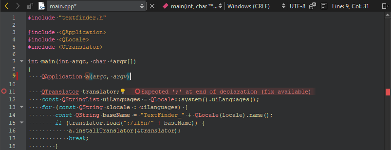
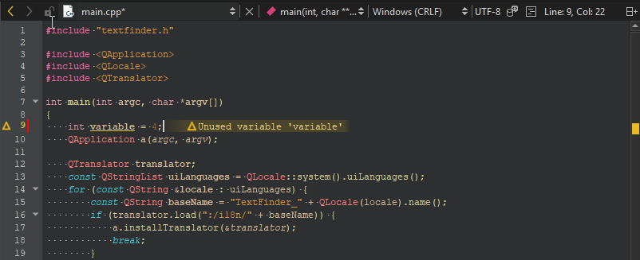
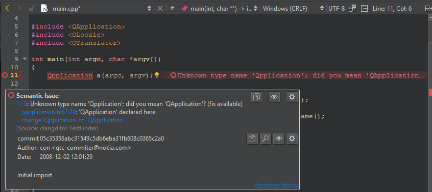

Check code syntax
As you write code, Qt Creator checks code syntax. When Qt Creator spots a syntax error in your code, it underlines it, displays an icon, and shows error details when you move the mouse pointer over the error or the icon. To apply an available fix, select  .
.
Similarly, when you are working on an instance of a JavaScript object notation (JSON) entity, Qt Creator underlines errors in the JSON data structure.
Examples of C++ code errors
Qt Creator annotates an error because a semicolon is missing at the end of the line:

Qt Creator issues a warning because the variable is not used:

A Qt class name has a typo:

Check QML or JavaScript syntax
When writing QML or JavaScript code, the annotations may have error codes listed in JavaScript and QML Error Codes.

Manage messages
Use the icons in the tooltip popup to copy the error or warning message to the clipboard, to hide messages of a particular type, or to change the diagnostics settings.
To modify the colors used for underlining errors and warnings:
- Go to Preferences > Text Editor > Font & Colors > Copy
- Select new colors for Error and Warning.
Set line annotation positions
To specify the position where the annotations are displayed, go to Preferences > Text Editor > Display > Line annotations, and then select whether to display the annotations directly next to the code, aligned to the right of the code, or in the right margin. Showing annotations between lines can be useful if there is usually not enough space to display annotations next to the text.

If you hide the annotations, you can move the mouse pointer over an icon to view them.
See also Analyze code with Clang-Tidy and Clazy and JavaScript and QML Checks.